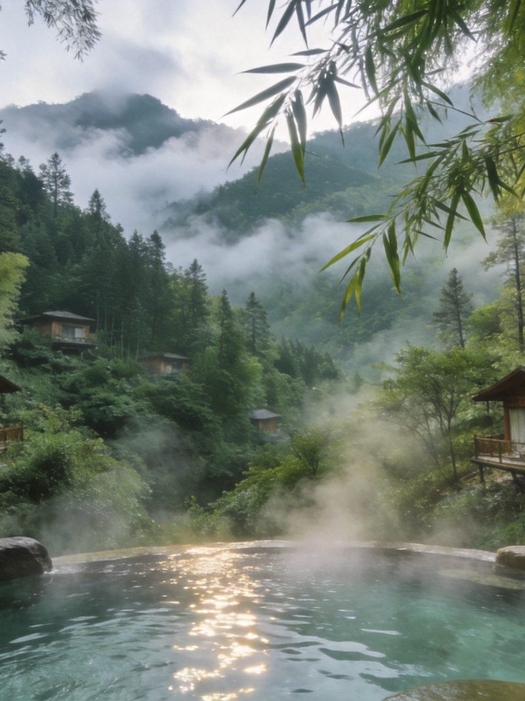
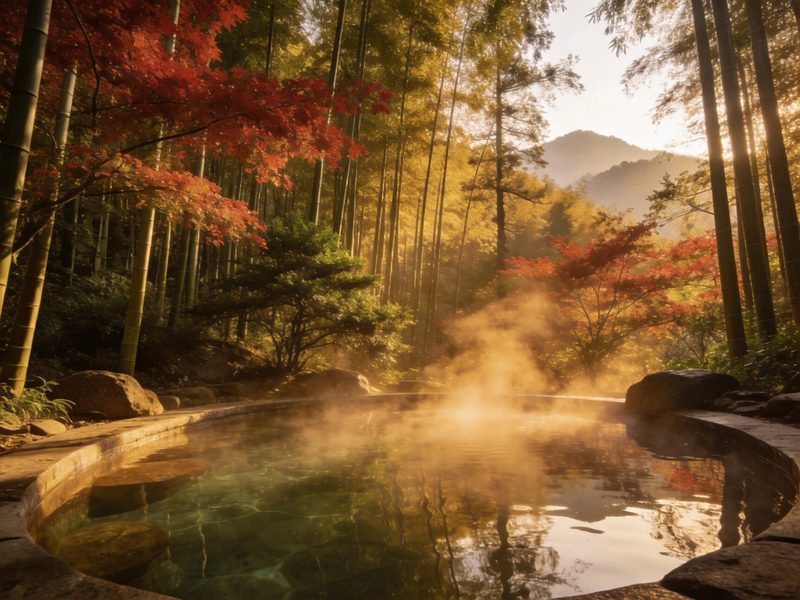
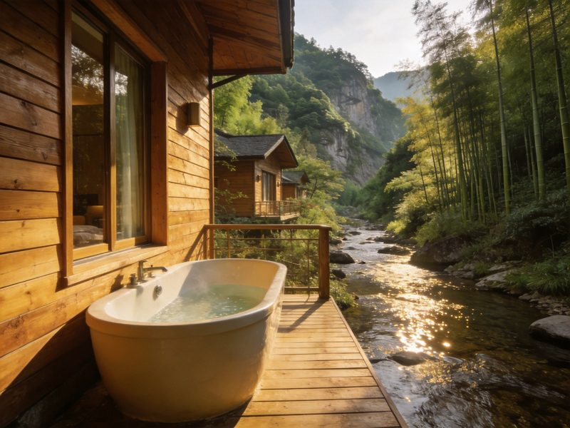

秘汤
森林温泉 · 竹海泉池
宁海森林温泉位于深甽镇，处在约 1700 公顷的竹海密林之间。露天汤池依山势错落分布，四周翠竹环抱、溪声潺潺，泡汤时能听到风声鸟语，是典型的森林生态温泉，也是「森林温泉」这一备受关注的旅游概念最具代表性的落地场景之一。
👍 必泡理由：把「泡汤」和「森林浴」合二为一，视觉与身心双重放松，江浙沪少有的森林秘汤。
浙江东部藏着中国十大温泉之一的宁海森林温泉——一期会展间在 1700 公顷竹海密林里，露天汤池沿山谷错落分布，泡汤时四周是苍翠竹林与潺潺溪声，是典型的森林秘汤。除了泡汤，还可顺路逛逛前童古镇（历史名镇的水乡烟火），或走进浙东大峡谷看峡谷飞瀑。A股「森林温泉」也因此闻名。本文含 1 日/2 日双方案、温泉怎么泡、交通、住宿、美食、预算与避坑全讲清。
宁海一天：上午森林温泉泡汤，下午前童古镇漫游，汤与古镇搭配刚刚好。
「住进森林」——首日森林温泉+前童古镇，次日浙东大峡谷徒步，把浓缩的浙东山水一次泡够。
把最有辨识度的体验单独拎出来讲清——看什么、为什么出名、怎么玩最值。

宁海森林温泉位于深甽镇，处在约 1700 公顷的竹海密林之间。露天汤池依山势错落分布，四周翠竹环抱、溪声潺潺，泡汤时能听到风声鸟语，是典型的森林生态温泉，也是「森林温泉」这一备受关注的旅游概念最具代表性的落地场景之一。
👍 必泡理由：把「泡汤」和「森林浴」合二为一，视觉与身心双重放松，江浙沪少有的森林秘汤。

距离宁海县城不远，前童古镇是浙东保留较完整的历史名镇：卵石铺就的街巷、临水的木构民居、祠堂与作坊遍布，保持着古朴的水乡烟火。推荐在这里吃一顿豆腐宴，配上宁海特色的千层饼，把温泉之旅延伸成一场古镇人文游。
👍 必逛理由：泡汤后逛古镇，刚柔并济；古镇门票亲民、游客密度适中。

想给温泉之旅加一点自然探险，可去浙东大峡谷——峡谷幽深、飞瀑连缀、栈道穿梭于林水之间，徒步强度适中。把「森林温泉」与「峡谷徒步」连在一起，就是一趟完整又有层次的浙东山野度假。
👍 延伸理由：森林+峡谷的组合，让宁海成为江浙沪难得的「泡汤+徒步」双料目的地。
宁海有高铁站，森林温泉在深甽镇，自驾/高铁+接驳都方便，交通相当成熟。
| 方式 | 🚗 自驾（推荐） | 🚄 高铁+接驳 |
|---|---|---|
| 走法 | G15沈海高速宁海/浙江沿海，导航「宁海森林温泉」直达，山路弯多但路况好。 | 高铁至宁海站，转乘公交/班车或打车/包车至深甽镇森林温泉（约 30–40min）。 |
| 时长/成本 | 杭州/宁波出发约 1.5–2.5h | 高铁到站后接驳约 30–40 分钟 |
| 💡 一句话建议：自驾最自由；高铁到宁海站后打车/包车也很方便，一日游完全可行。 | ||
宁海住宿以森林温泉度假区与县城/古镇民宿为主，泡汤房体验最佳。
浙东山海味，前童豆腐宴是招牌，泡完温泉来一顿最落胃。
区间为保守–宽松，实际以选择为准；温泉门票需另算。
| 项目 | 1日快充版 | 2日深泡版 |
|---|---|---|
| 温泉门票（常规） | 约 100–200 | 约 100–240（两日） |
| 大交通（江浙沪往返人均） | 约 100–220 | 约 120–300 |
| 住宿 | —（当日往返） | 约 200–900 |
| 餐饮 | 约 70–140 | 约 140–280 |
| 前童古镇/峡谷/小交通 | 约 40–100 | 约 100–220 |
| 合计 · 人均 | 约 200–350 | 约 450–900 |